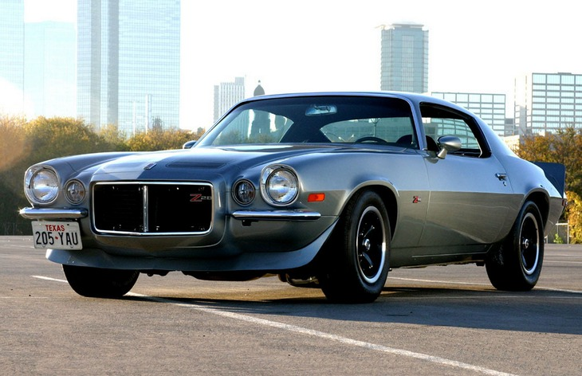
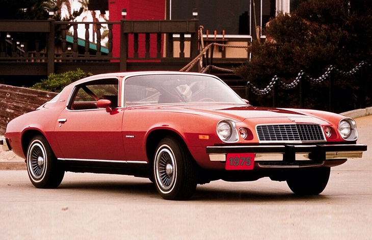
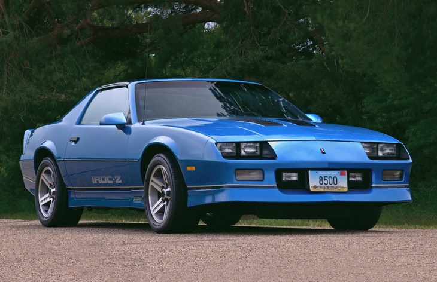
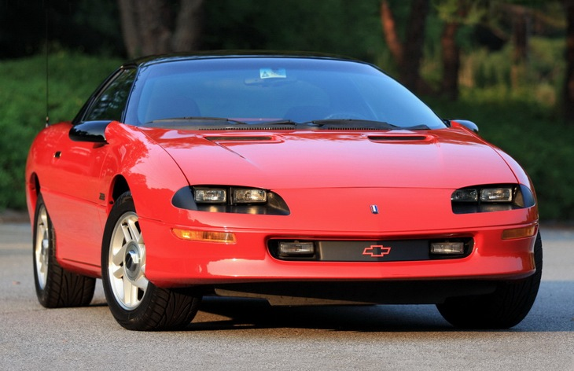
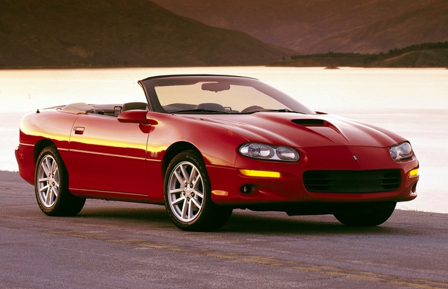
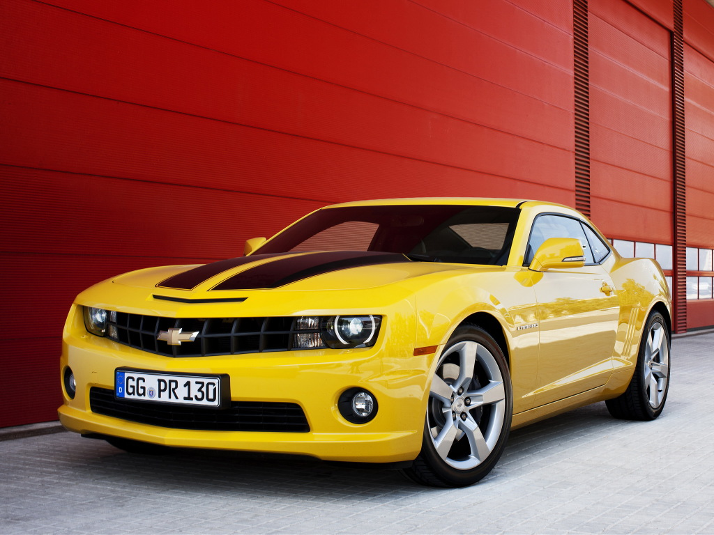
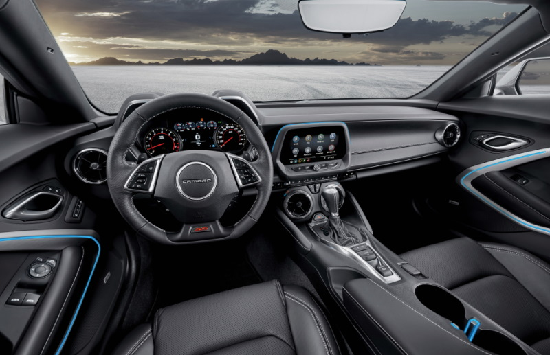

Шевроле Камаро
Chevrolet Camaro1 поколение, 1966–1969

«Это маленький хищный зверек, питающийся мустангами» — именно так маркетологи компании Chevrolet шутливо отвечали на вопрос журналистов о том, что означает слово «Камаро».
Заявивший о себе в 1966 году спорткар Chevrolet Camaro был настроен на борьбу с моделью Ford Mustang, образовавшим за пару лет до того момента новый класс автомобилей и зародивший
культуру «пони-каров» — компактных заднеприводных двухдверных купе со спортивным нравом и приемлемым ценником. Так что юморной ответ достаточно полно охарактеризовывал
предназначение новинки.
Следует упомянуть, что детище «Форда» не является родоначальником класса «Pony Car» во всех смыслах, ведь подобные автомобили были созданы и марками Chevrolet, и Plymouth немногим
ранее. Однако именно красавец с жеребцом на решетке радиатора создал небывалый общественный резонанс благодаря своему темпераменту, стилю, идеологии и стал хитом, который уже за
первые полтора года продаж преодолел планку в миллион реализованных экземпляров.
Chevrolet не мог сидеть сложа руки и наблюдать за невероятным успехом конкурента, поэтому задачей номер один в середине шестидесятых стала разработка автомобиля, способного достойно
сражаться за долю нового рынка. И вот, наконец, 11 августа 1966 года в Норвуде, штат Огайо, свет увидел первый серийный Camaro, который положил начало эпохи легендарного автомобильного
семейства.
Самым доступным был «Камаро» с 3,8-литровым 140-сильным агрегатом с шестью цилиндрами, расположенными в ряд, и оснащенный трехступенчатой «механикой». Но такая «голая» версия была не слишком востребована, в то время как огромным спросом пользовались экземпляры с пакетами RallySport и SuperSport. Комплектация RS подразумевала под собой некоторые внешние изменения, самым заметным из которых был иной дизайн передка со скрытыми за решеткой радиатора фарами, а версия SS отличалась огромным 6,5-литровым мотором V8 мощностью в 325 л. с. (позже 350 и 375 сил). Интересно то, что эти два пакета можно было совместить в одном авто, получавшем, как ни странно, шильдик RS/SS.
Другим бестселлером была модификация Z28 c более спортивной подвеской, подкорректированным выхлопом, фирменными полосками на капоте и «восьмеркой» объемом 5,0 литров, выдававшей по паспорту 290 л. с., однако многие говорили о том, что показатель явно занижен и в действительности мощь этого зверя гораздо выше. На Z28 ставилась исключительно механическая коробка передач, в то время как для других версий был доступен и «автомат». А флагманом в линейке был «жареный» Chevrolet Camaro ZL1 c аж 430 «лошадьми» под капотом, который нередко участвовал в гонках на четверть мили.
Автомобиль выпускался с кузовами купе и кабриолет до 1969 года на двух заводах в США, также сборка моделей велась в Бельгии, Швейцарии, Перу, Венесуэле и на Филиппинах.
2 поколение, 1970–1981
Chevrolet Camaro первого поколения производился до 1969 года, а в 1970 году борьбу за «место под солнцем» с «Мустангом» продолжил обновленный красавец на том же шасси. Вторую генерацию сотрудники «Шевроле» разрабатывали уже не впопыхах, а с толком и с расстановкой, поэтому авто получилось еще притягательнее предшественника, а шасси стало надежнее.
Важнейшим достижением этого «Камаро» стал тот факт, что в 1977 он опередил по продажам своего заклятого врага. Однако есть и менее позитивные моменты: перестала выпускаться версия с открытым верхом, а в 1975 году пропала из каталогов и модификация Z28, которая в этом поколении имела 360-сильного монстра в подкапотном пространстве и «выстреливала» до «сотни» за 6,5 секунд.
Заднеприводные купе оснащались рядными «шестерками» 3.8 и 4.7, двигателем V6 3.8, а также восьмицилиндровыми моторами объемом 5,0, 5,7, 6,5 и 6,6 литра. Коробки передач — механическая четырехступенчатая и автоматическая трехступенчатая.
3 поколение, 1982–1992
Производство «третьего» Chevrolet Camaro стартовало в январе 1982 года, и основополагающим принципом новинки стала экономичность. Дело в том, что в семидесятых годах страховые компании взвинтили ценники для мощных авто, а затем еще и имел место нефтяной кризис, и все производители машин были вынуждены урезать аппетит своих творений. Таким образом, самый мощный «Камаро» не дотягивал даже до 200 «лошадей», а базовый мотор и вовсе выдавал лишь 90 сил.
Помимо экономичности автомобиль мог похвастать очень симпатичным новаторским дизайном и хорошим оснащением, кроме того, в модельный ряд вернулась открытая версия. Приятной новостью для любителей скорости стало появление в 1990 году версии IROC-Z, которая приблизила спорткупе к его «мускулистым» предкам — двигатель, в котором обитали 230 «лошадок» разгонял машину до 100 км/ч за 5,8 секунд.
На третье поколение Chevrolet Camaro устанавливались четырехцилиндровый мотор 2.5, а также V-образные «шестерки» и «восьмерки» объемом от 2,8 до 5,7 литра.
4 поколение, 1993–2002
В 1993 году стартовали продажи автомобилей четвертого поколения, выпуск которых был организован на заводе в канадской провинции Квебек. Этот Chevrolet Camaro был приятен глазу и комфортен, богато оснащен и, что самое замечательное, вернулись моторы, сила которых заслуживала уважения.
Гамма силовых агрегатов состояла из двигателей V6 объемом 3,4 и 3,8 литра, а также мотора V8 5.7, их мощность варьировалась от 162 до 305 л. с. А особый интерес вызвали две ограниченные серии — в честь 30-летия модели в 1997 году была выпущена 330-сильная версия, а спустя пять лет и 345-сильная.
И как только Camaro начал восставать из пепла после кризисов и начинать новую жизнь, его поразил новый удар. В середине девяностых корпорация General Motors начала активно расширяться и создавать новые бренды, такие как Geo и Saturn и, не уследив за своим финансовым положением, к 2002 году была практически на грани банкротства, из-за чего пришлось отказаться от производства многих автомобилей, в том числе и Chevrolet Camaro.
5 поколение, 2009–2015
Пятое поколение модели Chevrolet Camaro дебютировало в 2009 году. Автомобили с кузовами купе и кабриолет выпускались на заводе в Канаде до 2015 года.
В 2012 году «Камаро» впервые официально вышел на российский рынок. У нас предлагались купе с моторами V6 3.6 (328 л. с.) и V8 6.2 (405 л. с.) в сочетании с шестиступенчатой автоматической коробкой передач.
6 поколение, 2015

Шевроле Камаро — это двухдверный спортивный автомобиль, шестое поколение которого выпускается в США с 2015 года. В модельном ряду есть версии с кузовами купе и кабриолет.
Продажи Chevrolet Camaro в России стартовали летом 2016 года. У нас предлагались только купе, оснащённые двухлитровым бензиновым турбомотором мощностью 238 л. с. и восьмиступенчатым «автоматом». Цены начинались с отметки 2 800 000 рублей.
В 2018 году на рынок вышла рестайлинговая версия с обновлённым дизайном, базовая стоимость купе на тот момент составляла 2 990 000 рублей. В 2020 году продажи «Шевроле Камаро» в России завершились.
На американском рынке спорткар также оснащается двигателями V6 3.6 (330 л. с.) и V8 6.2 (455 л. с.), а самой мощной версией является Camaro ZL1 с компрессорным восьмицилиндровым мотором, развивающим 650 сил.
- Я просто список для тренировки в домашнем задании
- Я просто список для тренировки в домашнем задании
- Я просто список для тренировки в домашнем задании
- Я просто список для тренировки в домашнем задании
- Я просто список для тренировки в домашнем задании
- Я просто список для тренировки в домашнем задании
- Я просто список для тренировки в домашнем задании
- Я просто список для тренировки в домашнем задании